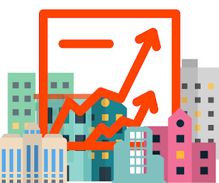
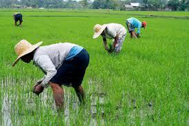
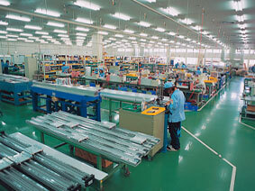
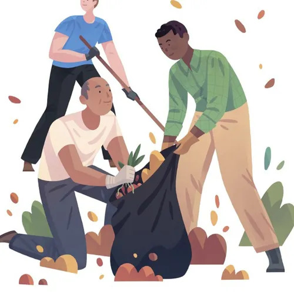
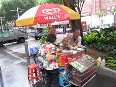
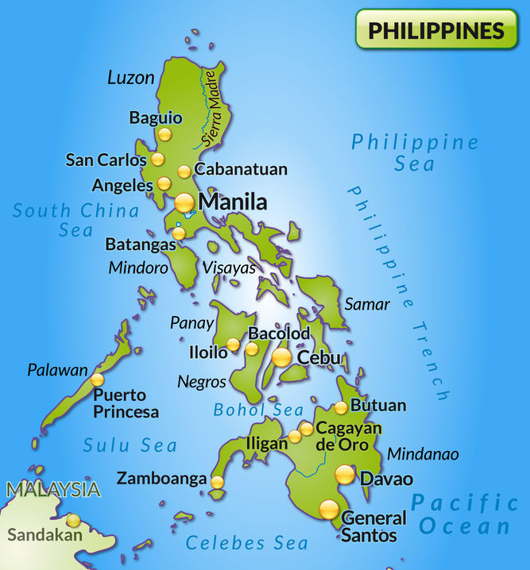

Sa buong pag-aaral ngayong quarter, aking naunawaan na bawat sektor ng ekonomiya—agrikultura, industriya, paglilingkod, impormal na sektor, at pakikipagkalakalan sa ibang bansa—ay magkakaugnay at may mahalagang papel sa kaunlaran ng bansa. Ang responsableng pakikilahok ng mamamayan, tamang paggamit ng yaman, at pag-unawa sa patakarang pang-ekonomiya ay susi upang umunlad ang lipunan at maitaguyod ang mas maayos at masaganang pamumuhay para sa lahat.